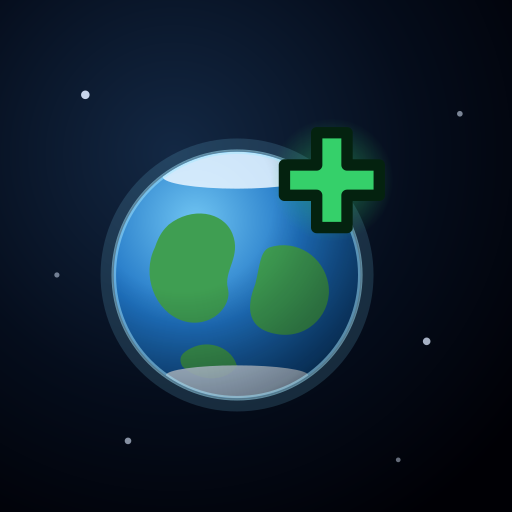
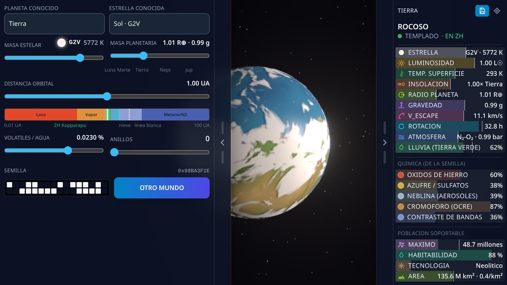
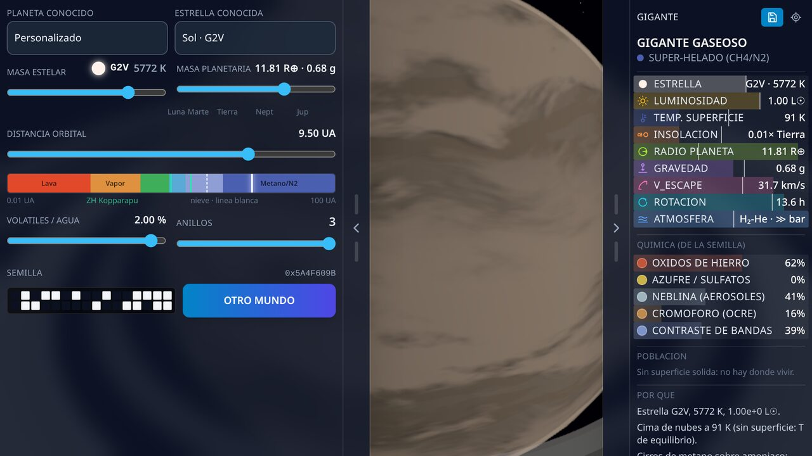
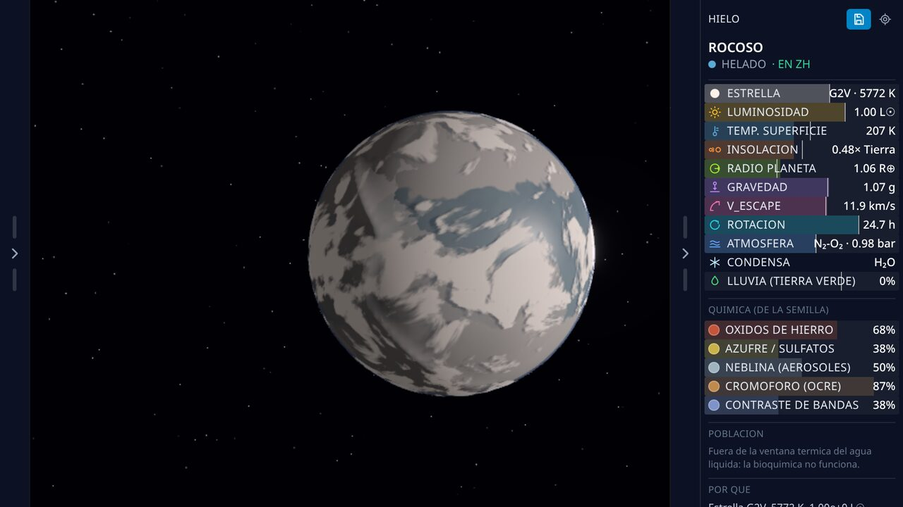
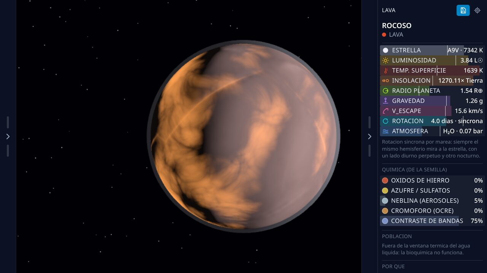
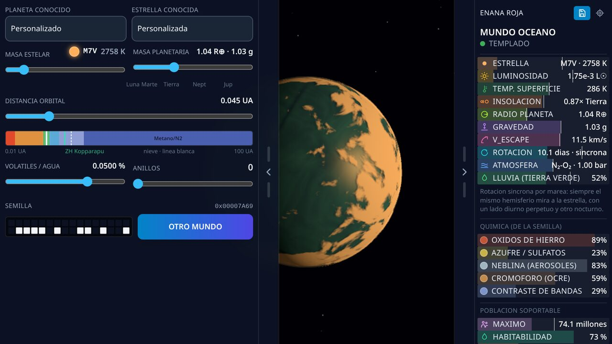
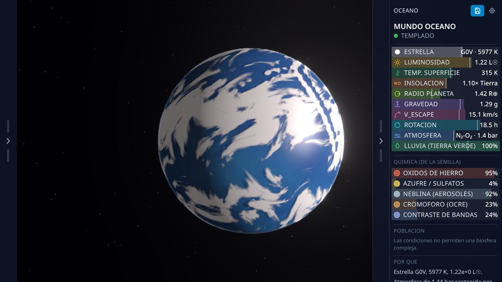
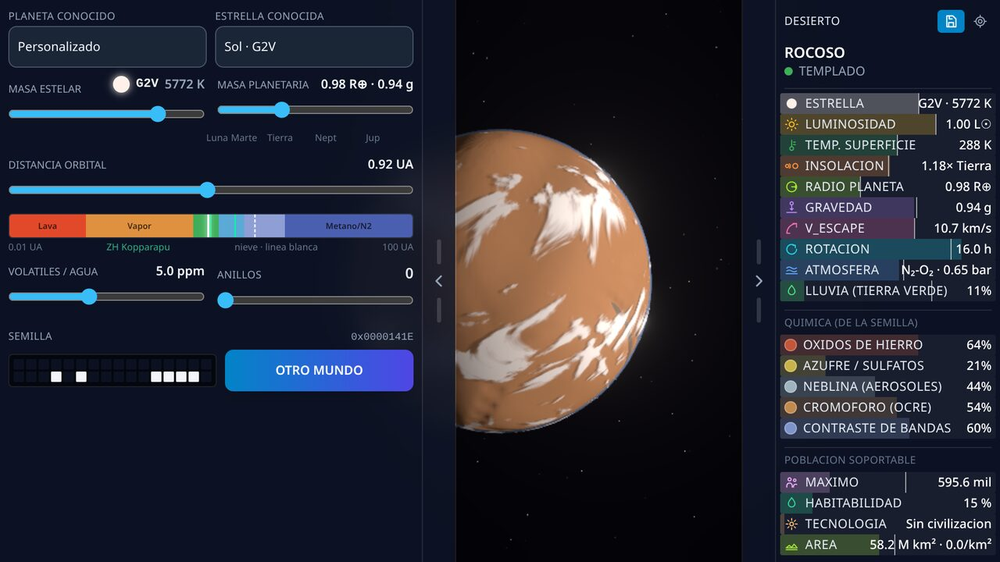
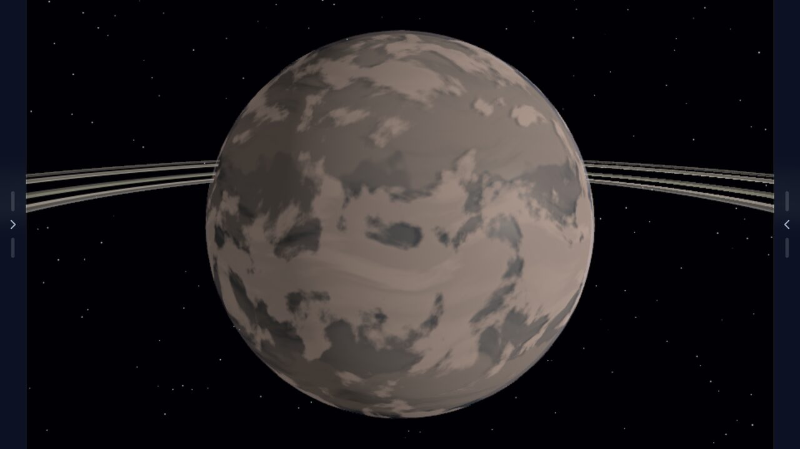

Crea Planetas
Build worlds with real physics: move five sliders, see what planet comes out.
Android 12+ · landscape · v0.1.0
Screenshots
None of these images is drawn or retouched: they are eight worlds computed by the game, each with its five sliders somewhere different, and under each one are the numbers the physics actually produced.
{kind=link}

{kind=link}

{kind=link}

{kind=link}

{kind=link}

{kind=link}

{kind=link}

{kind=link}

Crea Planetas is a toy for understanding how a world is made.
No levels, no score, no way to lose. Five sliders and a universe that answers.
FIVE SLIDERS, ONE WHOLE WORLD
- Star mass — from a tiny red dwarf to a blue-white giant.
- Planet mass — from an asteroid to a gas giant.
- Orbital distance — from scorched to frozen.
- Water and volatiles — from an airless desert to an ocean world.
- Rings — from none to a system with gaps and ringlets.
Move any of them and the whole world changes at once: the colour of the sky, the height of the mountains, where ice forms, whether there are clouds, whether there is life. Nothing is drawn in advance.
REAL PHYSICS, NOT SPECIAL EFFECTS
Everything you see comes out of an actual equation, not a lookup table of pre-made planets:
- A star's colour is its blackbody spectrum at its temperature, run through the response of the human eye. A 3000 K star looks red because 3000 K is red.
- Planet radius follows from mass by the Chen & Kipping relation.
- The habitable zone is Kopparapu's, with its moist- and maximum-greenhouse edges.
- Ice appears and spreads through the Budyko-Sellers ice-albedo feedback, the same one behind real ice ages.
- Continents are drawn by tectonic plates pushing against each other.
- Rings end where the Roche limit says they do, which depends on the planet's density.
- An atmosphere is kept or lost according to gravity and the radiation it receives.
Which is why the game sometimes gives answers that are uncomfortable and correct: that a planet further from its star can be hotter, the way Venus is hotter than Mercury.
FOR CHILDREN WHO CANNOT READ YET
Every quantity is shown three times over: a pictogram saying what it is, a bar saying how much, and the number for whoever does read. The bars carry an Earth reference mark, because "half full" means nothing and "past Earth" means something.
An adult can read the explanations. A four-year-old can drag the water slider and watch an ocean appear. Both are playing the same game.
TWENTY REAL WORLDS
Pick Earth, Mars, Venus, Jupiter or Neptune and compare them with yours. TRAPPIST-1 e, Proxima Centauri b, K2-18 b and other real exoplanets are there too, with the mass and orbit actually measured for them.
EVERY WORLD HAS A NUMBER
Behind each planet is a 32-bit seed you can see and flip bit by bit. The same sliders and the same seed always give exactly the same world, so a planet you like can be saved and found again.
CIVILIZATIONS AND WONDERS
If the world allows it, people appear. And if people appear, they build: stone circles, ziggurats, pyramids, dams, cathedrals, vertical farms, orbital stations. Each work needs both the knowledge to build it and the hands to do it, so a small world will never raise the pyramid even if it knows how.
NONE OF THE OTHER THING
- No ads.
- No purchases.
- No accounts, no sign-up.
- No internet: works entirely in airplane mode.
- No data collected at all. Saved worlds stay on the phone.
Note: the in-game text is in Spanish. Almost everything is pictograms, bars and numbers, so it plays without reading — but the written explanations are Spanish only for now.
Made by Comunidad Hacker Crea Juegos.